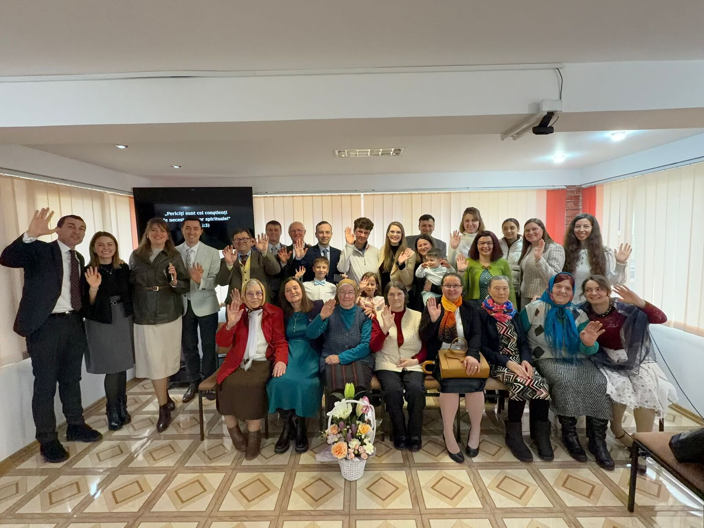

2026 “Eternal Happiness” Convention · Welcome, delegates Congresul „Fericire eternă” 2026 · Bun venit, delegați
Welcome to Bicaz Bun venit la Bicaz
The town at the gates of the Bicaz Gorges, where the Bicaz-Centru congregation joyfully shares the good news. Orașul de la porțile Cheilor Bicazului, unde congregația Bicaz-Centru împărtășește cu bucurie vestea bună.

The Bicaz-Centru Congregation Congregația Bicaz-Centru
Our congregation was formed in 2019 from a group that belonged to the Piatra Neamț congregation — with whom we still work closely as our nearest congregation. We are a warm, close-knit family of publishers serving among the mountains, and we can't wait to meet you. Congregația noastră s-a format în 2019 dintr-o grupă care aparținea de congregația Piatra Neamț — cu care colaborăm în continuare îndeaproape, fiind cea mai apropiată congregație. Suntem o familie unită și caldă de vestitori care slujesc printre munți și abia așteptăm să vă cunoaștem.
Where we preach Unde predicăm
Our territory covers eight mountain communes — Bicaz, Bicaz-Chei, Bicazu Ardelean, Dămuc, Hangu, Pângărați, Tarcău and Tașca. From one end to the other it stretches about 100 km of serpentine mountain roads — nearly two hours by car through gorges, forests and lakeside villages. Teritoriul nostru cuprinde opt comune de munte — Bicaz, Bicaz-Chei, Bicazu Ardelean, Dămuc, Hangu, Pângărați, Tarcău și Tașca. De la un capăt la altul se întinde pe aproximativ 100 km de serpentine — aproape două ore cu mașina, printre chei, păduri și sate de pe malul lacului.
Your help is needed! Este nevoie de ajutorul tău!
Between the areas we cover there is still unassigned territory — villages and hamlets where no one preaches regularly yet. There is plenty of room for more workers in this beautiful corner of the harvest. Între zonele pe care le acoperim există încă teritoriu nerepartizat — sate și cătune în care nimeni nu predică în mod regulat. Este loc din belșug pentru mai mulți lucrători în acest colț frumos al secerișului.
Territory sizeMărimea teritoriului
Eight communes and 33 villages, stretching about 100 km from end to end — roughly 2 hours by car on winding mountain roads. Opt comune și 33 de sate, întinse pe circa 100 km de la un capăt la altul — aproximativ 2 ore cu mașina pe drumuri de munte șerpuite.
PopulationPopulație
About 28,600 people live in our territory (2021 census) — roughly 800 inhabitants for every publisher. În teritoriul nostru locuiesc aproximativ 28 600 de oameni (recensământul din 2021) — circa 800 de locuitori pentru fiecare vestitor.
Languages we meetLimbi întâlnite
The ministry here is entirely in Romanian — we practically never meet English speakers in the territory. Lucrarea de aici se desfășoară integral în limba română — practic nu întâlnim vorbitori de engleză în teritoriu.
Special featuresParticularități
Public witnessing in breathtaking spots — the Bicaz Gorges, the great dam of Lake Bicaz — plus scattered hamlets and seasonal tourism. Mărturie publică în locuri de o frumusețe rară — Cheile Bicazului, barajul lacului Bicaz — plus cătune răsfirate și turism sezonier.
Life and ministry here Viața și lucrarea de aici
Every territory has its own flavour. Here is what makes ours special — and what you might notice if you join us in the ministry. Fiecare teritoriu are farmecul lui. Iată ce face zona noastră specială — și ce ați putea observa dacă ni vă alăturați în lucrare.
- Local customs:Obiceiuri locale: people here value a friendly greeting and unhurried conversation; many keep strong Orthodox traditions. oamenii de aici prețuiesc un salut prietenos și o conversație fără grabă; mulți păstrează tradiții ortodoxe puternice.
- Best times for ministry:Cele mai bune momente pentru lucrare: late mornings and early evenings; Saturday markets are lively spots for conversations. dimineața târziu și seara devreme; piețele de sâmbătă sunt locuri pline de viață pentru conversații.
- Public witnessing in beautiful places:Mărturie publică în locuri frumoase: we share in the public ministry at spots tourists travel far to see — the Bicaz Gorges (Bicaz-Chei) and the great dam of Lake Bicaz. participăm la lucrarea publică în locuri pe care turiștii vin de departe să le vadă — Cheile Bicazului (Bicaz-Chei) și barajul lacului Bicaz.
- Visiting speakers:Vorbitori invitați: many brothers invited to give the public talk at our Sunday meeting travel around 100 km to reach our congregation. mulți frați invitați să prezinte cuvântarea publică la întrunirea de duminică parcurg în jur de 100 km până la congregația noastră.
- Nearby congregations:Congregații învecinate: Piatra Neamț is our nearest congregation — the one our group grew out of in 2019 — and we still cooperate closely. Piatra Neamț este cea mai apropiată congregație — cea din care a crescut grupa noastră în 2019 — și colaborăm în continuare îndeaproape.
Every photo was taken in our own territory, with regular phones. The beauty is true! Toate fotografiile au fost făcute în teritoriul nostru, cu telefoane obișnuite. Frumusețea este adevărată!
Our zone in motion Zona noastră în mișcare
A few moving pictures say more than any description — the gorges, the lake and the brotherhood that serves here. Câteva imagini în mișcare spun mai mult decât orice descriere — cheile, lacul și frații care slujesc aici.
Cart witnessing at the gorges Mărturie cu standul la chei
A drive across the territory Pe drum prin teritoriu
Practical things to know Informații practice
Meeting timesProgramul întrunirilor
- Midweek: Wednesday, 18:00În timpul săptămânii: miercuri, 18:00
- Weekend: Sunday, 11:00În weekend: duminică, 11:00
- Language: RomanianLimba: română
Where we meetUnde ne întrunim
Str. Pieții, nr. 6, 1st floor
615100 Bicaz, Neamț — right in the town centre, by the market.
Str. Pieții, nr. 6, etaj 1
615100 Bicaz, Neamț — chiar în centrul orașului, lângă piață.
The 2026 convention itself is held in Bacău, about 90 km from Bicaz. Congresul din 2026 are loc la Bacău, la circa 90 km de Bicaz.
ContactContact
Public contact phone: 0733 570 552.
We're happy to help you plan your visit.
Telefon de contact pentru public: 0733 570 552.
Vă ajutăm cu plăcere să vă planificați vizita.
Nearby sightsObiective din apropiere
- The Bicaz Gorges & Lacu RoșuCheile Bicazului și Lacu Roșu
- The Bicaz dam & Lake Izvorul MunteluiBarajul Bicaz și lacul Izvorul Muntelui
- Ceahlău National ParkParcul Național Ceahlău